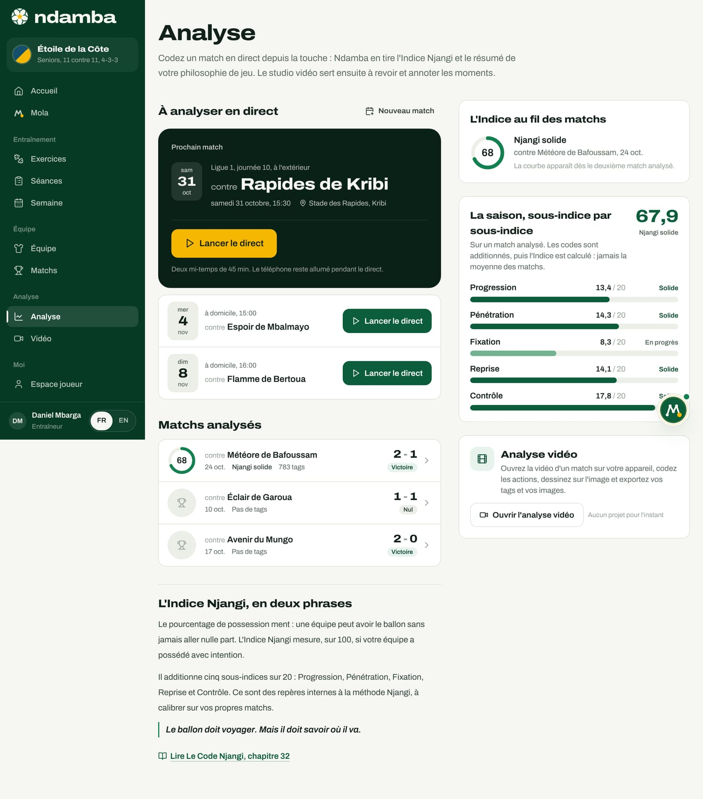
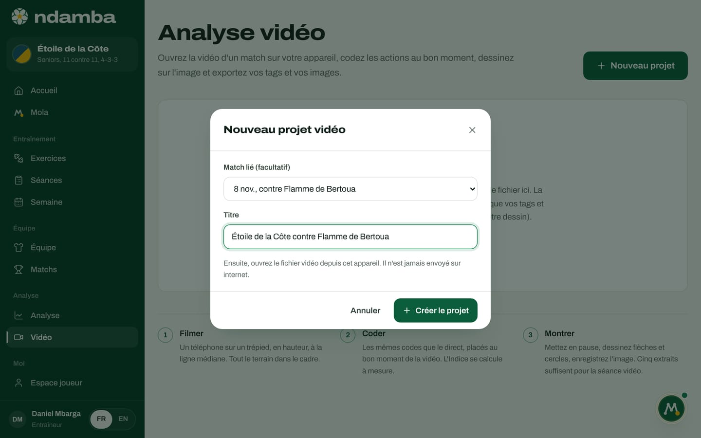
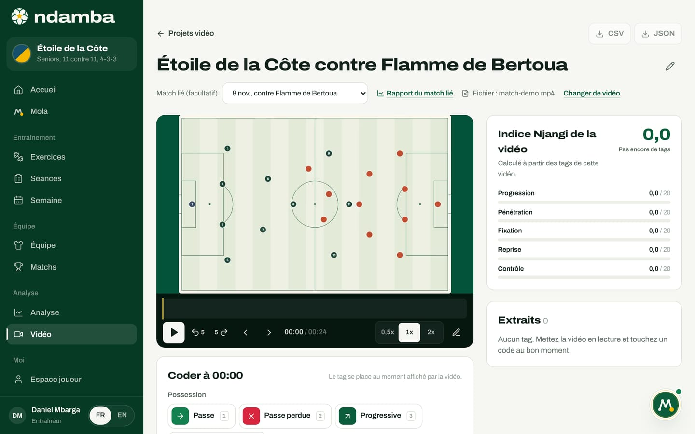

La saison et l’analyse vidéo
La page Analyse, qui suit l’Indice Njangi match après match et sur toute la saison, puis le studio vidéo : ouvrir un match filmé depuis l’appareil sans jamais l’envoyer sur internet, coder au bon moment, dessiner sur l’image, retrouver ses extraits et exporter.
11 min de lecture
Un match raconte une histoire ; une saison raconte une méthode. La page Analyse rassemble tous les matchs codés d’une équipe et montre si l’Indice Njangi monte, stagne ou baisse, sous-indice par sous-indice. C’est là qu’un directeur technique voit si le travail de la semaine se retrouve le samedi. La vidéo répond à une autre question : comment faire voir aux joueurs ce que disent les chiffres ? Beaucoup d’entraîneurs filment déjà avec un téléphone, mais un fichier vidéo pèse lourd et les données mobiles coûtent cher. Ndamba ouvre donc la vidéo directement sur l’appareil, sans jamais l’envoyer sur internet, et n’enregistre que ce que l’entraîneur y ajoute : des tags, des notes et des images annotées.
La page Analyse : la saison d’un coup d’œil
Dans le menu, groupe Analyse, touchez Analyse. Sur téléphone, c’est l’onglet Analyse de la barre du bas. Le sous-titre de la page dit l’ordre des choses : « Codez un match en direct depuis la touche : Ndamba en tire l’Indice Njangi et le résumé de votre philosophie de jeu. Le studio vidéo sert ensuite à revoir et annoter les moments. »


À analyser en direct
En haut, À analyser en direct présente les matchs à venir. Le premier occupe une carte sombre, Prochain match : date, compétition, adversaire, heure, stade et le bouton doré Lancer le direct, avec ce rappel : « Deux mi-temps de 45 min. Le téléphone reste allumé pendant le direct. » Les suivants viennent en lignes, chacun avec son bouton. Un match déjà commencé ou qui porte des tags affiche Reprendre le direct ; un match prévu dont la date est passée porte la pastille Date passée. Le lien Nouveau match permet d’en créer un (chapitre 11).
Sur les formules Gratuit et Joueur Premium, un seul match peut être analysé en direct. Au-delà, la carte annonce « Le direct illimité est dans Coach Pro » et le bouton devient Voir les offres ; ouvert par un autre chemin, le direct affiche lui aussi « Analyse en direct illimitée avec Coach Pro ». Les paiements ne sont pas encore branchés : l’activation d’une offre est une démonstration (chapitre 24).
Matchs analysés
La liste Matchs analysés montre chaque match codé, du plus récent au plus ancien : un petit cadran avec l’Indice arrondi (68), l’adversaire, la date, la bande (Njangi solide), le nombre de tags, le score et la pastille Victoire, Nul ou Défaite. Les matchs terminés sans aucun tag suivent, avec un trophée gris et la mention Pas de tags : dans la démo, les matchs contre Éclair de Garoua (1‑1) et Avenir du Mungo (2‑0). Touchez une ligne pour ouvrir le rapport (chapitre 13).
Un match terminé sans tags peut encore être codé après coup. Ouvrez son rapport, touchez Lancer le direct : le direct accepte un match terminé et l’indique par « Match terminé : les tags ajoutés complètent le rapport. »
L’Indice au fil des matchs
À droite, la carte L’Indice au fil des matchs dessine la courbe de la saison. Avec un seul match analysé, comme dans la démo club pro, elle montre son cadran et sa bande, et prévient : « La courbe apparaît dès le deuxième match analysé. » À partir de deux, elle trace une ligne de 0 à 100, avec les seuils 35, 50, 65 et 80 en repère, un point par match du plus ancien au plus récent, et la valeur du dernier. La phrase au-dessus dit combien de matchs comptent : « 2 matchs analysés. Touchez un point pour ouvrir le rapport. »
La saison, sous-indice par sous-indice
Sous la courbe, La saison, sous-indice par sous-indice donne l’Indice de la saison en grand (67,9 dans la démo club pro, Njangi solide) et les cinq barres. Le calcul suit la règle de la méthode, rappelée sous le titre : « Les codes sont additionnés, puis l’Indice est calculé : jamais la moyenne des matchs. » Un match codé avec 700 tags pèse donc davantage qu’un match codé à moitié, ce qui est juste : il contient plus de jeu observé. Avec un seul match, l’Indice de la saison est celui de ce match.
L’Indice en deux phrases, et la vidéo
Sous les matchs, L’Indice Njangi, en deux phrases rappelle l’idée de départ, « Le pourcentage de possession ment : une équipe peut avoir le ballon sans jamais aller nulle part. », puis la devise et le lien Lire Le Code Njangi, chapitre 32. La carte Analyse vidéo (« Ouvrez la vidéo d’un match sur votre appareil, codez les actions, dessinez sur l’image et exportez vos tags et vos images. ») liste les trois derniers projets et ouvre le studio avec Ouvrir l’analyse vidéo.
Si aucune équipe n’existe encore, la page demande d’abord de la créer, Créez d’abord votre équipe : un Nom de l’équipe, une Catégorie (de U9 à Seniors), un Format (de 5 contre 5 à 11 contre 11), puis Créer l’équipe.
La vidéo : ce qui reste sur l’appareil
Le studio vidéo lit un fichier qui se trouve sur l’appareil : le téléphone, la tablette ou l’ordinateur qui a filmé ou reçu la vidéo. Le fichier n’est jamais envoyé sur internet. Ndamba enregistre dans le navigateur de cet appareil le titre du projet, le nom du fichier, sa durée, vos tags, vos notes et vos images annotées. Il ne garde pas la vidéo elle-même : chaque fois que vous revenez au projet, vous rouvrez le même fichier, et vos tags se replacent au bon moment.
Créer un projet vidéo
- Dans le menu, groupe Analyse, touchez Vidéo. Sur téléphone, touchez Plus, puis Vidéo, ou Ouvrir l’analyse vidéo depuis la page Analyse.
- La page Analyse vidéo s’ouvre. Sans projet, elle affiche Aucun projet vidéo et ce conseil : « Filmez avec un téléphone et un trépied, puis ouvrez le fichier ici. » En bas, Analyser une vidéo en trois temps résume la méthode : Filmer (un téléphone sur un trépied, en hauteur, à la ligne médiane, tout le terrain dans le cadre), Coder et Montrer (« Cinq extraits suffisent pour la séance vidéo. »).
- Touchez Nouveau projet.
- Dans la fenêtre Nouveau projet vidéo, choisissez le Match lié (facultatif), ou laissez Aucun match. Choisir un match remplit le Titre, ici « Étoile de la Côte contre Flamme de Bertoua ». Vous pouvez l’écrire vous-même, par exemple « Lionceaux contre Requins, 2e mi-temps ».
- Touchez Créer le projet. Le studio s’ouvre.


Le bouton Analyser la vidéo d’un rapport de match fait la même chose en un geste : il ouvre le projet lié à ce match, ou le crée.
Le studio vidéo
En haut du studio : le lien Projets vidéo pour revenir à la liste, les boutons CSV et JSON (actifs dès le premier tag), le titre du projet avec un crayon, Renommer le projet, et le Match lié (facultatif), modifiable à tout moment. Quand un match est lié, Rapport du match lié ouvre son rapport.
Ouvrir la vidéo

La grande zone sombre dit Ouvrir une vidéo : « Choisissez un fichier vidéo sur cet appareil (MP4 ou WebM). Il n’est pas envoyé sur internet. » Touchez Choisir le fichier, ou, sur un ordinateur, faites glisser le fichier sur la zone. Tant que la vidéo n’est pas ouverte, les codes restent grisés et le studio indique « Ouvrez d’abord la vidéo. » Un fichier qui n’est pas une vidéo est refusé : « Ce fichier n’est pas une vidéo. »
Quand vous revenez, la zone affiche « Choisissez à nouveau la vidéo « match-demo.mp4 » », avec l’explication : « Pour économiser la mémoire, Ndamba ne garde pas la vidéo. Rouvrez le même fichier pour retrouver vos tags au bon moment. » Si le fichier choisi porte un autre nom, un bandeau prévient que les tags seront placés sur cette vidéo. Le lien Changer de vidéo permet d’en ouvrir une autre.
Lire, ralentir, avancer image par image


Sous l’image, de gauche à droite :
- Lecture et Pause (toucher l’image fait aussi lecture ou pause) ;
- Reculer de 5 s et Avancer de 5 s ;
- Image précédente et Image suivante, pour avancer d’une image à la fois (1/25 de seconde) ;
- le temps, par exemple « 00:00 / 00:24 » ;
- les vitesses 0,5x, 1x et 2x ;
- le crayon Dessiner.
Au-dessus des boutons, la frise de la vidéo porte un trait de couleur pour chaque tag et la tête de lecture dorée. Touchez la frise pour sauter à un moment, ou un trait pour aller à ce tag. Sur ordinateur, le clavier suffit, et le studio le rappelle : « Clavier : Espace lecture ou pause, flèches 5 s, virgule et point image par image, D dessiner, N note. Les codes ont les mêmes touches qu’en direct (1 à 9, F S L K R A B, Q W E). » Les chiffres servent à nos passes et au danger, F et S à la fixation, L, K et R aux transitions, A et B aux tirs et buts adverses, Q, W et E aux passes et entrées adverses. Sur téléphone, le lecteur reste collé en haut pendant que vous descendez vers les codes.
Coder au bon moment
La carte des codes a pour titre le temps de la vidéo, Coder à 00:00, et rappelle : « Le tag se place au moment affiché par la vidéo. » Ce sont les codes du direct (chapitre 12), rangés en cinq groupes : Possession (Passe, Passe perdue, Progressive, Ligne traversée), Danger (Dernier tiers, Surface, Tir, Tir cadré, But), Fixation (Fixe deux, Renversement), Transitions (Perte, Reprise 5 s, Récupération) et Adversaire (Tir adverse, But adverse, Passe adv., Passe perdue adv., Tiers adv.). Chaque bouton affiche combien de fois il a servi, par exemple « ×3 », et un message confirme chaque tag (« Passe, 00:00 »).
Le studio applique les mêmes règles que le direct : un But ajoute Tir et Tir cadré, un Tir cadré ajoute Tir, et une Récupération touchée dans les 5 secondes qui suivent une Perte ou une Passe perdue devient une Reprise 5 s. Sous les codes, le champ Note accepte une phrase libre (« le pivot se retourne ») avec Ajouter la note.
La bonne méthode : mettez en pause, reculez image par image jusqu’au moment exact, touchez le code, relancez. La vitesse 0,5x aide pour les phases rapides.
L’Indice Njangi de la vidéo
À droite, la carte Indice Njangi de la vidéo, « Calculé à partir des tags de cette vidéo. », donne la note, sa bande et les cinq sous-indices en petites barres. Elle se met à jour à chaque tag.

La capture montre un piège utile à comprendre. Trois passes réussies et aucune perte donnent un Contrôle de 20 sur 20, et rien d’autre : l’Indice vaut 20,0, Possession sans intention. L’Indice ne prend son sens que sur beaucoup d’actions. Le rapport de match le signale sous 12 tags ; la carte de la vidéo, elle, ne le dit pas.
Les extraits
La carte Extraits liste chaque tag dans l’ordre de la vidéo, avec son nombre total : le temps, l’icône de couleur du code, son nom, les codes ajoutés automatiquement (« + Tir, Tir cadré »), la note s’il y en a une, la vignette de l’image annotée, et la corbeille Supprimer ce tag, qui retire aussi les codes ajoutés avec lui. Touchez un extrait : la vidéo repart 4 secondes avant le moment, pour qu’on voie l’action se construire. Dès que deux groupes sont présents, des pastilles permettent de filtrer : Tous, Possession, Danger, Fixation, Transitions, Adversaire ou Note.
Un extrait est un moment marqué dans la vidéo, pas un fichier découpé. Pour la séance vidéo avec les joueurs, on rejoue les extraits depuis cette liste, sur le même appareil.
Dessiner sur l’image
- Touchez le crayon Dessiner (ou la touche D). La vidéo se met en pause et la mention « Dessin » apparaît sur l’image.
- Choisissez l’outil, Flèche, Cercle ou Main levée, et la couleur, Or, Blanc ou Rouge. Les cercles sont légèrement aplatis, comme des joueurs vus depuis la tribune.
- Tracez avec le doigt ou la souris. Annuler le trait, Rétablir le trait et Effacer corrigent.
- Touchez Enregistrer l’image. L’image et le dessin sont fondus en une petite image, attachée au tag sélectionné s’il est tout proche de ce moment, ou à défaut à une nouvelle note à ce moment. Le message confirme : « Image enregistrée sur le tag à 00:12 ».
- Fermer le dessin (ou Échap) referme les outils sans enregistrer.
La vignette apparaît dans l’extrait. Touchez-la pour l’agrandir : Télécharger l’image l’enregistre sur l’appareil en JPEG, Retirer l’image la détache du tag, Aller à l’extrait rejoue le moment.
Exporter : CSV et JSON
Les deux boutons en haut du studio téléchargent le travail sur l’appareil, sans rien envoyer :
- CSV : une ligne par tag (colonnes time_s, time, code, label, side, note, drawing et group), à ouvrir dans un tableur, par exemple « ndamba-etoile-de-la-cote-contre-flamme-de-bertoua.csv ».
- JSON : le projet complet, l’Indice de la vidéo et tous les tags, images comprises. C’est le format à garder ou à transmettre à un analyste.
La liste des projets

Sur Analyse vidéo, chaque projet a sa carte : le cadran de son Indice, le titre, le match lié ou la date de création, le fichier (ou Pas encore de vidéo), la durée, les tags, les images et la bande. Toute la carte ouvre le studio. La corbeille Supprimer le projet demande confirmation, « Supprimer ce projet et ses tags ? », avant d’effacer. La vidéo, elle, reste intacte sur l’appareil.